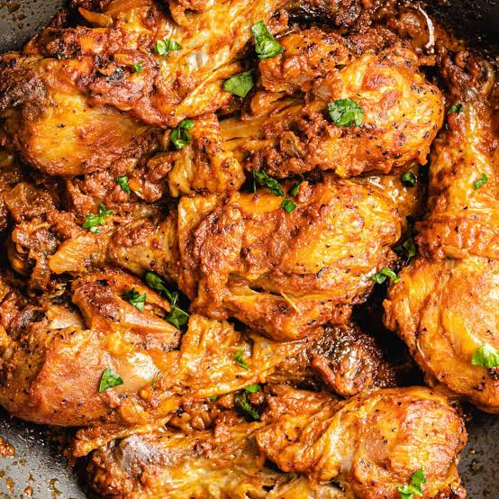

poulet-Moambe

poulet-Moambe dish
Poulet maombe is celebrated as the national dish of both Congo kinshasa and Congo brazzaville
, it features tender pieces of chickens simmerd in a rich , velvety, and deepy savory
sauce made from the pulp of palm nuts (or palm butter.)
The dish delivers an earthy, distintively central African flavor profile and is typically reserved
Ingredients
- Chicken
- palm nut cream
- onions
- garlic
- gingrer
- Tomotoes paste
- chili peppers
- waters
- Vegetables
- salt
- black pepper
Cooking steps
- Season and sear
season ans sear the chiken pieces in large pot untill goldenbrown, then remove and set aside
- saute the onions
then the garlic , and ginger in the remaining oil until soft and fragrance.
- stir >
stir in the tomato paste and cook for 2 minutes.
- pout in the palm nut cream
add water the mixxe everthing together.
- Returnthe chiken
and drop in the whole chilii pepper the simmer covered on like 45 to 60 minutes until the chicken is tender
and the sauce is thick, the skim and excess oil from the top and serve.